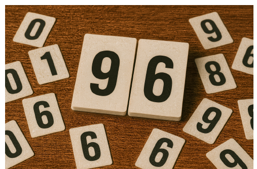

49th ICPC World Championship · Problem H

Ever since you arrived at your university, you have been a tireless advocate for introducing the brand-new martial-arts-plus-card-based sport of Contact Bridge to the school (and the world). Finally, after a great deal of (really persistent and annoying) advocacy on your part, you have obtained permission and funding from your dean to build a grand new arena for the sport! Well, technically it is not so much an “arena” as a “broom closet,” and maybe not “grand” so much as “cramped,” and the “new” is also debatable. But the sport of the future has to start somewhere!
Unfortunately, you just realized that you are going to need a score display in order to run the games. In Contact Bridge, the score for a team starts at 0 and, after various repeatable actions, may be incremented by certain fixed amounts. There is also a maximum value – if the team’s score would be incremented above the maximum, it will instead be capped there. You want the team’s score to be visible at all times, so you will need to prepare some signs, each with a single digit printed on it, that can be arranged to show the score.
Unfortunately the dean’s “funding” is running short, and these signs are expensive. Figure out the minimum set of signs you need to purchase to show any score that is possible to achieve during the game. Note that you won’t need any 9 signs, as any 6 sign can be turned upside-down to make a 9.
The first line of input contains two integers m and n, where m (1 ≤ m ≤ 1018) is the maximum score value, and n (1 ≤ n ≤ 10) is the number of different ways of scoring. This is followed by n lines, each containing an integer p (1 ≤ p ≤ 1 000), which is the number of points awarded for a type of action in the game. No two types of action are awarded the same number of points.
For each digit from 0 to 8 in increasing order, output two integers: the digit and the number of signs with that digit that you need to purchase. Omit digits where the number of signs needed is 0.
1000 4 60 100 222 650
0 3 1 1 2 3 3 1 4 3 5 1 6 3 7 2 8 3
967 1 1000
0 1 6 2 7 1